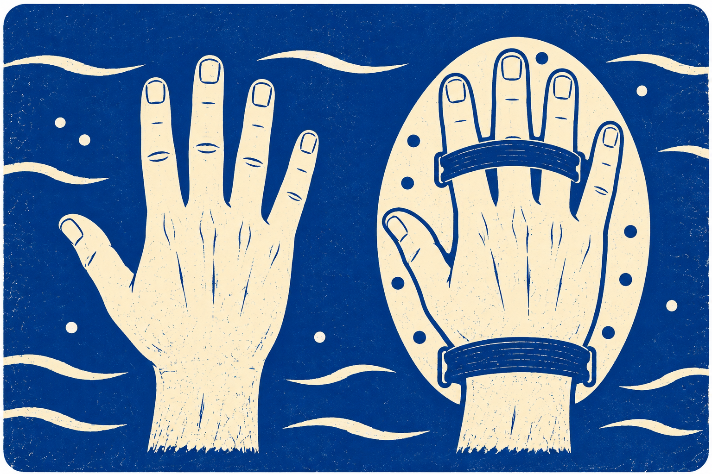
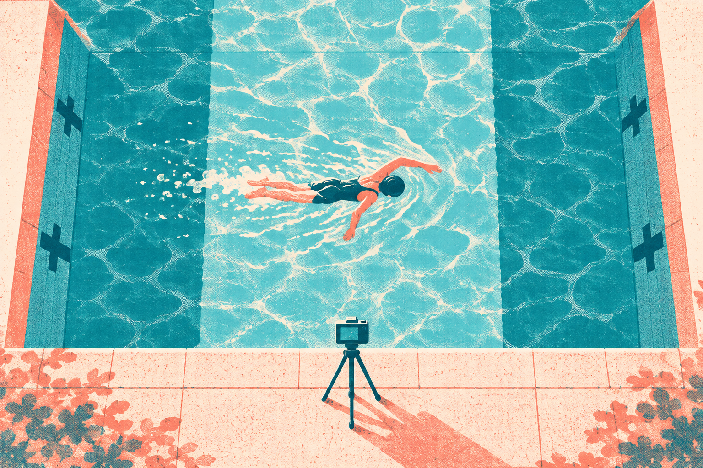
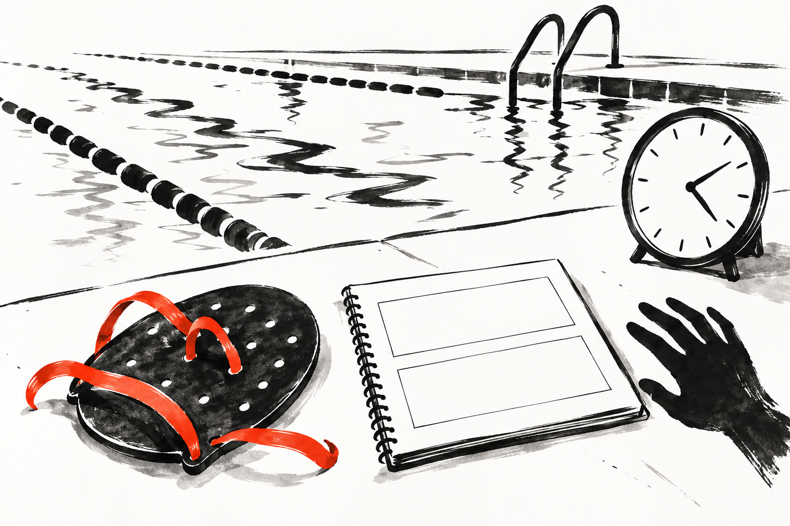
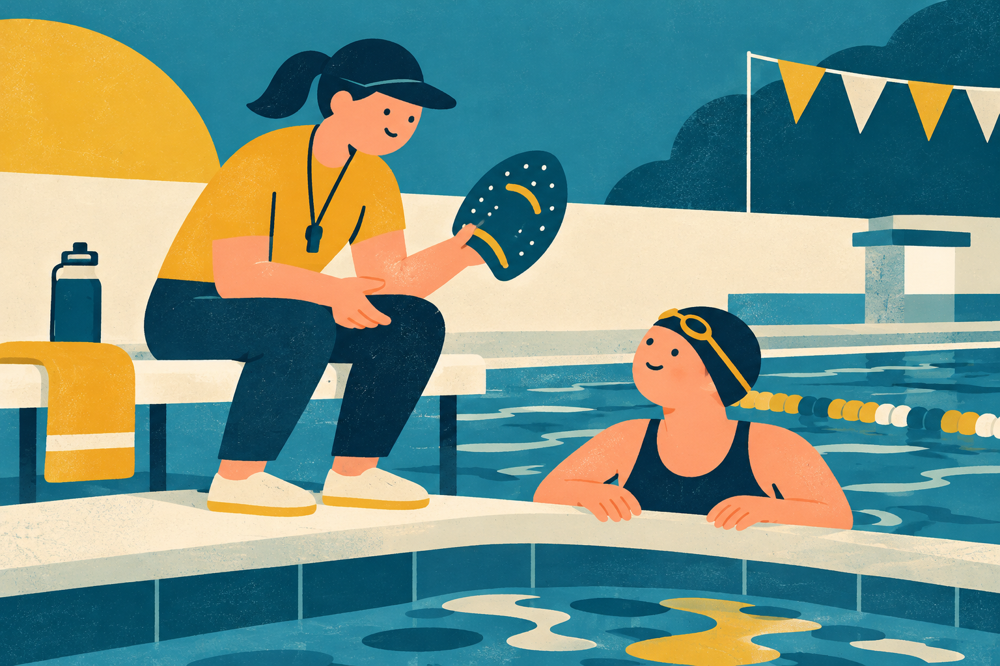

SWIMMING RESEARCH / 16
パドルで、進み方はどう変わる？
手の面・腕の周期・測る区間
2026年11月2日 公開

手にパドルを付けると、一度腕を回しただけで、いつもより身体が先へ進む。「大きく泳げた。この動きを覚えれば、外しても同じように泳げるかな」。用具を使ったあと、そんな期待が生まれるかもしれません。
パドルは、手に取り付ける平たい板状の用具です。手だけのときより、水に働きかける面が広くなります。研究でも、付けて泳ぐときに、腕の一周期で進む距離が伸びた例があります。ただし、用具を付けた状態の変化と、外したあとに身についた変化は、分けて考える必要があります。
今日は、腕をひと巡りさせて進む距離と、回す速さを分けて見てみましょう。 同じ「大きく進めた」でも、腕の動き、身体の移動、使ったエネルギーは別の量です。二つの研究から、違いをほどいていきます。
1｜腕を大きく回したから、遠くへ進んだ？
まず「一周期」をそろえましょう。ここでは、右手が水に入ってから、左右の腕を回し、右手が次に水へ入るまでを一周期とします。最初の右手の入水を出発点にすると、左手の入水を通り、次の右手の入水で終わります。三つの場面を描いても、最初の印は出発点なので、三かき進むという意味ではありません。「一周期で進む距離」は、その間に身体がどれだけ前へ移動したかです。
この距離が伸びたとき、腕を以前より大きく振り回したとは限りません。パドルを付ければ、水に働きかける面も変わります。用具のない泳ぎと同じ条件ではないからです。図では、手の面の違いと、一周期の始まり・終わりを分けて見てください。研究の一周期の距離は、泳ぐ速さと周期の頻度から計算する値で、手が通った道の長さではありません。
手の面と、腕の一周期

一周期：出発点から、次の同じ状態まで
- 出発右手が入水
- 途中左手が入水
- 到着次の右手が入水
最初の右手は出発の印。ここから次の右手までが一周期です。
水へ働きかける面は手。
手の外にも、板の面が加わる。
たとえば、同じ人が同じ場所を掃除しても、小さなほうきと幅の広いほうきでは、一度に触れる範囲が違います。広く掃けたからといって、腕が急に長くなったわけではありません。これは用具によって条件が変わることのたとえで、ほうきと水泳が同じ仕組みだという説明ではありません。
泳ぎでも「進む距離が伸びた」という結果だけから、手の軌道が正しくなった、筋力が増えた、技術を覚えた、とは決められません。どんな条件で、何を測った結果なのかへ戻ることが大切です。
腕はひと巡り。身体は、その先へ。
2｜研究で変わったのは、100mのどこ？
2012年の研究では、熟練した泳者9人が、パドルなし、小さいパドル、大きいパドルの三条件で、100mクロールを全力で泳ぎました。50mプールを一往復する課題です。研究者は各50mの中央10m、スタートから20〜30mと70〜80mで、速さと腕の動きを調べました。壁を蹴った直後やターンの影響を避けた測定です。López-Plazaら、2012
大きいパドルでは、パドルなしに比べ、前半と後半のどちらの測定区間でも一周期で進む距離が伸びました。一方、速さのはっきりした違いが見つかったのは、後半の測定区間でした。そこでは小さいパドルでも大きいパドルでも、なしの条件より速くなりました。
測ったのは、この二つの10m

50mプールを一往復＝合計100m
数値はスタートからの累計。上下は同じプールの往路と復路です。
行き → 0〜50m
← 帰り 50〜100m
色＋太枠の20〜30m、70〜80mが測定区間。各10mです。
スタートから20〜30m。
スタートから70〜80m。
ここでいう「後半」は、後半50m全部のタイムをそのまま比べた意味ではありません。その中の70〜80mを進む速さです。図では50mプールを一往復する道筋に、実際に測った二つの10mを置いています。どちらも同じプール中央を、逆向きに通る区間です。「100mのどこでも速くなった」と広げず、確かめた区間を残して読みます。
一周期の距離が伸びたら、それだけで速くなると考えたくなります。でも、泳ぐ速さには、腕を一巡させる頻度、つまり同じ時間に何周期できるかも関わります。長く進めても、次の周期までに時間がかかれば、速さが同じ場合もあります。この研究では、腕を回す頻度の平均は下がる傾向でしたが、条件間のはっきりした差とは判断されませんでした。「差が見つからない」は、すべての値が全く同じという意味ではありません。距離と速さを同じ言葉で扱わないことがポイントです。
そして、これはパドルを付けている最中の比較です。数週間使ったあと、外しても距離や速さが伸びたかを調べた結果ではありません。参加者は用具に慣れた熟練者で、泳ぎ始めた子どもにも同じ変化が出ると保証することもできません。
3｜楽に進めるなら、大きいほどいい？
別の研究では「同じ速さで泳ぐとき、使うエネルギーはどう変わるか」を調べました。これは、どれだけ速く泳げるかとは違う問いです。身体を動かすために使うエネルギーを、ここでは身体の燃料のようなものと考えてください。
Crockerらの研究は、泳ぎに慣れた成人25人の結果を分析しました。流れを作る水槽で同じ速さを保ち、パドルなしと五つの大きさを比べています。各条件は3分間。呼吸を測る装置と、脚に浮具を付け、足首を留めて主に腕だけで進む実験なので、普段の自由なクロールとは条件が異なります。Crockerら、2021
一周期の全体と、その中の1m

計算だけの仮例：研究の測定値ではありません
「点」も距離も架空。身体の燃料を測った値ではなく、パドルあり・なしの二条件にも対応しません。2倍進むという効果を示すものではありません。
3点1m
3点
6点 ÷ 2m ＝ 1mあたり3点
2点1m
2点1m
2点1m
2点
8点 ÷ 4m ＝ 1mあたり2点
全体は6→8点に増えても、1m分は3→2点に減る。 割り算の区切り方を示す例です。
パドルでエネルギー量が小さくなった。
最大サイズでは、なしより大きくなった。
パドルを使うと、1m進むために使うエネルギーは小さくなりました。大きくすると減る傾向はありましたが、大きさを増すたび、同じだけ得をするわけではありませんでした。さらに、最も大きいパドルでは、腕の一周期あたりに使うエネルギーは、なしの条件より大きくなりました。
「1mあたり」と「一周期あたり」は、割り算の相手が違います。同じ道を歩くときも、歩数が少なければ、一歩で担当する距離は長くなります。一歩の仕事と、道全体を進む仕事を分けて考えるためのたとえです。泳ぎで一周期の距離が変われば、この二つの値も同じようには動きません。一周期で進む距離も長くなるため、一周期の合計が増えても、その中の1m分は小さくなりえます。図の点数は、この割り算だけを見る仮の例です。2mで6点なら1m分は3点。4mで8点なら1m分は2点。全体の点数は増えても、1m分は減ります。点数は架空で、身体のエネルギーを実際に数えた値ではありません。
この結果は「肩への力を直接測った」という意味でもありません。身体全体のエネルギーの値から、特定の関節にかかる力や、将来けがをする確率を計算することはできません。また、この二つの研究から、一人ひとりに合う大きさや、子どもが使うべきサイズは決まりません。
パドルの良し悪しを、大きさ一つで決めるより、何のために使い、何を見たいかを先に置くほうが、結果を読み違えずにすみます。長く進む感覚を確かめたいのか、用具なしの泳ぎを見たいのかでも、観察する場面が変わります。
4｜次は、腕を回す感じを一つ見る
普段からパドルを使い、施設でも使用が認められている人は、次回、パドルを外したあとの泳ぎに一つ目を向けてみましょう。これは本記事の観察案です。研究と同じ効果を出す方法でも、用具を初めて使う人への導入手順でもありません。使い方は指導者と確認し、痛みが出たら中断します。
たとえば、その日にパドルを付ける前の泳ぎと、外したあとの泳ぎで、同じ短い距離、同じ余裕のある速さを選びます。休んで呼吸を整え、一人で振り返るなら「外したあと、腕を慌てて回す感じがあるか」を一つ見ます。これは感じたことの観察で、距離や速さの測定ではありません。測れる環境なら、指導者に同じ区間で右手が入る回数を見てもらう方法もありますが、少ないこと自体を良いと決めません。距離や本数を研究に合わせる必要はありません。
一人で振り返るなら、一つだけ

- 1普段の泳ぎを基準に
余裕のある泳ぎ方を思い出す。
- 2外した後の感じを見る
腕を慌てて回す感じがあるか。
- 3感じたことを伝える
測った距離・速さとは分けて相談。
パドル中だけよく進み、外すと元に戻ったら、その日は「用具を付けた条件で違いがあった」と受け止めます。すぐに失敗とせず、何を感じたのかを指導者へ伝える材料にできます。外したあとも泳ぎやすければ、次の機会にも確かめる候補にします。一度よかっただけで、技術が定着したとは決めません。
逆に、外したあとに腕が重い、呼吸が乱れるなら、変化を残そうと無理に続ける必要はありません。疲れや試した順番でも泳ぎは変わるので、一度の比較から原因をパドルだけに決めないようにします。子どもや未経験の人は、まず用具なしで何を練習したいかを指導者と相談するところからで十分です。
パドルで一周期の距離が伸びても、回す速さや、外した後の泳ぎは別に見ていけます。今日は腕を慌てて回す感じがあるか、一つ確かめる。 目的に合う使い方を指導者と選ぶための手がかりにしましょう。
まとめ｜パドルで進んだことと、上達したことを分ける
研究の目的は？ 2012年の論文は、パドルの大きさでクロールの進み方がどう変わるかを調べました。2021年の論文は、同じ速さで進むために身体が使うエネルギーが、大きさによってどう変わるかを調べました。
何を比べた？ 前者は熟練者9人がパドルなし・小・大で100mを泳ぎ、途中の二つの10mで速さと腕の周期を比較。後者は成人25人について、流れのある水槽で速さを固定し、脚に浮具を付けて足首を留めた腕中心の条件で、なしと五つのサイズを比較しました。
何が分かった？ 前者では大きいパドルで一周期に進む距離が伸びました。後者ではパドル使用中の1mあたりのエネルギーは減りましたが、最大サイズでは一周期あたりのエネルギーは増えました。「遠くへ進む」「1m分が少ない」「腕の一周期で使う量が少ない」は、同じ意味ではありません。
この記事で伝えたい結論。 パドルは、付けている間の進み方やエネルギーの使い方を変える用具です。この2本は、外した後も泳ぎが上達したかを調べた研究ではありません。よく進んだ体験だけで、技術が身についたとは判断しないでください。
では、どうすればよい？【記事からの提案】 普段使っている人は、次回は外した後の「腕を慌てて回す感じがあるか」を一つ振り返り、指導者に伝えてください。道具なしの上達を知りたいなら、道具なしの同じ距離・条件の記録を、別の日にも比べます。大きいものへ買い替えるという結論にはしません。
参考文献と確認範囲
- López-Plaza D・Alacid F・López-Miñarro PA・Muyor JM（2012）The Influence of Different Hand Paddle Size on 100-m Front Crawl Kinematics. Journal of Human Kinetics, 34, 112–118. 原著全文、DOI
- Crocker GH・Moon JF・Nessler JA・Newcomer SC（2021）Energetics of Swimming With Hand Paddles of Different Surface Areas. Journal of Strength and Conditioning Research, 35(1), 205–211. 著者所属機関の原著PDF、PubMed
原著の方法・結果・表と抄録を確認して説明しています。図は用具、測定区間、結果の方向、観察の順序を伝える説明図です。実測した水流や身体各部の力、長期の上達を描いたものではありません。